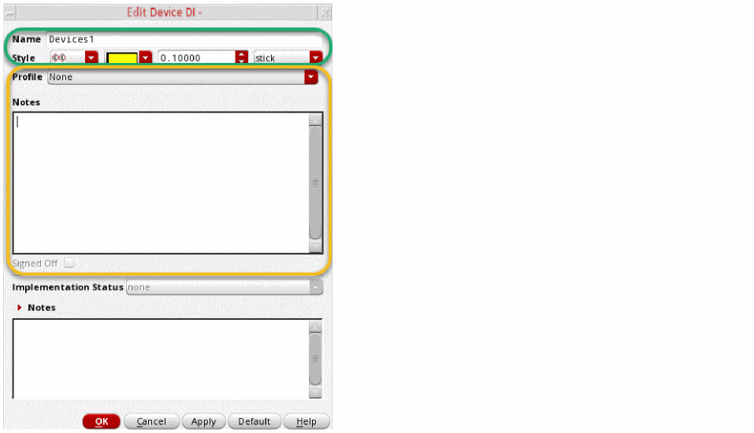

Editing a Design Intent in Schematics XL
To edit a design intent in Schematics XL,
-
Open the Edit Design Intent form from the Navigator or the canvas.
A submenu is displayed if there are multiple design intents available for the selected objects. -
Choose the design intent to be edited.
The Edit Design Intent form is displayed. The form is divided into three parts: the upper and middle sections are completed in Schematics XL.
 - Edit the Name, Style or Profile on the upper section of the form as required.
- Amend the Notes in the middle section, if required.
- Review the Implementation Status and accompanying Notes in the lower section of the form. If a response is required to assist the layout designer in implementing the design intent, enter any additional notes.
-
If the Signed Off option is enabled it means the design intent has an implementation status of
completeorreview.
If the status isreview, the design intent was created in Layout XL.
If the status iscomplete, review the original design intent that was requested against any recorded notes and the actual outcome. If the design intent is considered to be satisfactorily implemented into the design, click the Signed Off option. -
Click OK.
In Layout XL, the affected objects are immediately displayed with a sync icon as a prompt to Sync Design Intent.
The functions
The design intent name, font, and font size of each annotation label can also be amended using the Property Editor or the Edit Object Properties form. This excludes annotation labels for design intent categories HighCurrent or MaxVoltageDrop, which display the object name rather than the design intent name, and therefore cannot be amended in this way.
Related Topics
Schematic and Layout View Synchronization
Reviewing and Editing a Design Intent Created in Layout XL
Return to top